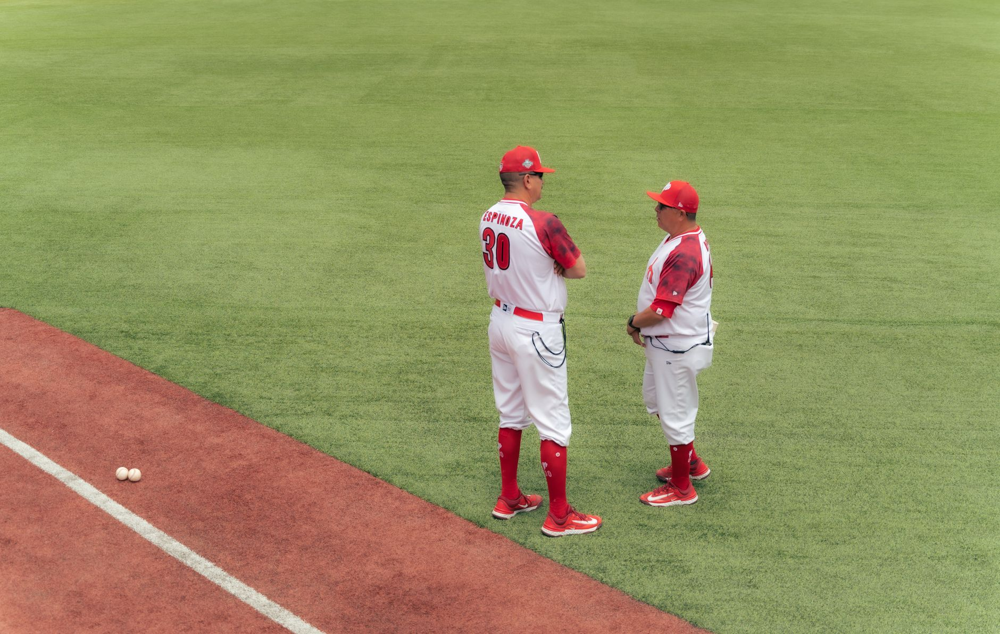

Set a simple goal for every practice
Start each practice by choosing one main team goal and two supporting skills. For example, a session might focus on throwing accurately, catching with two hands, and communicating on defense. A clear goal helps coaches stay focused and gives players a simple measure of success.
Plan for the age, experience, and attention span of your team. Younger players often need frequent changes, short explanations, and plenty of movement. Older youth players can handle longer skill blocks, but they still learn more when drills are active and connected to real baseball situations.
Use a practice structure that keeps players moving
A 75-minute practice works well for many young teams. Begin with a five-minute welcome and movement warm-up, then spend 15 minutes on throwing and catching. Follow with 20 minutes of skill stations, 15 minutes of baserunning or defensive situations, and 15 minutes of a small-sided game. Save the final five minutes for a team review and equipment check.
Avoid long lines by creating groups of three to five players. While one player performs the drill, the others should catch, retrieve balls, count repetitions, or give a simple team call. Coaches can use cones, buckets, tennis balls, and portable nets to make several stations from basic equipment.
Build stations around essential baseball skills
A strong station rotation covers throwing, catching, hitting, fielding, and baserunning. Keep each station focused on one action. At the throwing station, players can work on pointing the front shoulder, stepping toward the target, and finishing with the throwing hand across the body. At the catching station, emphasize watching the ball, presenting a target, and securing the ball before moving.
Give players a success target instead of demanding perfect technique. Ask for eight accurate throws out of ten, five clean ground-ball pickups, or three strong swings in a row. Small targets make progress visible and help young athletes stay motivated when a skill is difficult.
Make drills age appropriate and game-like
For ages five to seven, use short activities, larger or softer balls, and simple language. Let players catch rolled balls before moving to gentle tosses. For ages eight to ten, add movement, directional throws, and basic decisions such as where to go with the ball. For older youth teams, include live reads, defensive responsibilities, count situations, and baserunning choices.
Turn repetitions into challenges without making every activity feel like a test. A team can earn a point for five consecutive accurate throws, a clean relay, or a successful cutoff. Keep competition cooperative when possible, so players learn that communication and helping teammates matter as much as individual performance.
The best youth practice is one where every player gets many chances to move, think, and succeed.
Review progress and improve the next plan
End practice with a quick review. Ask players what skill felt easiest, what they want to improve, and what their team did well. Coaches should also note which drills caused confusion, where players waited too long, and whether the practice goal was realistic. Use those observations to adjust the next session.
Build a weekly progression instead of repeating the same practice. A first session can teach the basic movement, the next can add direction or speed, and a third can place the skill into a game. Keep revisiting throwing, catching, hitting, and baserunning so players develop balanced skills rather than specializing too early.
For extra hitting ideas, use the related guide Baseball Batting Drills to Fix Your Swing for Good at https://dhyey.bond/blog/baseball-batting-drills-to-fix-your-swing-for-good/. Combine those batting activities with short fielding games and positive feedback, and your young team will build steady confidence throughout the season.
See Also
If you enjoyed this Baseball Guide article, check out Baseball Batting Drills to Fix Your Swing for Good for more useful reading.